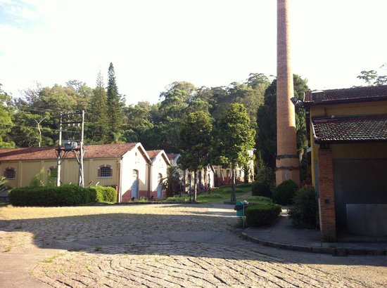
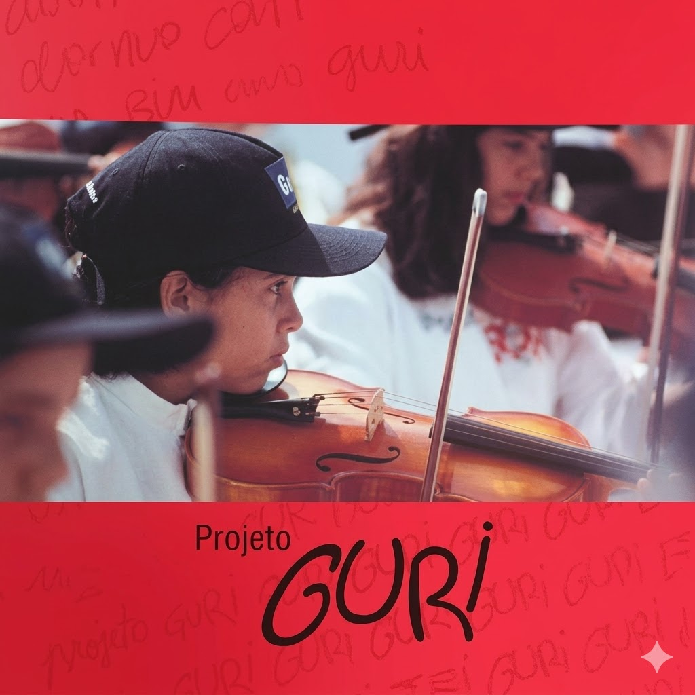

Sobre Nós
Conheça um pouco mais sobre o Projeto Guri!
img

O Projeto Guri é um programa de educação musical criado pelo Governo do Estado de São Paulo em 1995, com o objetivo de oferecer ensino gratuito de música para crianças e adolescentes. Em São Roque, o polo foi implantado há mais de duas décadas e ficou conhecido por ser o primeiro do interior paulista. Ao longo dos anos, centenas de jovens tiveram acesso a aulas de instrumentos, teoria musical e apresentações artísticas, contribuindo para sua formação cultural e cidadã. Além de ensinar música, o Projeto Guri ajudou a desenvolver valores como disciplina, respeito e trabalho em equipe. O polo de São Roque tornou-se uma importante referência cultural da cidade, oferecendo oportunidades para que muitos alunos descobrissem talentos e até seguissem carreira musical. Por meio de suas atividades, o projeto deixou um legado de inclusão social e transformação na vida de diversas famílias da região.

O Guri é uma política pública criada em 1995 e formalizado pela Resolução SC-60 de 27/12/1996, na Secretaria de Cultura, Economia e Indústria Criativas do Estado de São Paulo. Seguiu gerido por administração direta até novembro de 2004, quando foi celebrado o primeiro contrato de gestão para gerenciamento por organização social Inspirado na bem-sucedida experiência de educação musical venezuelana, o Guri nasceu com vertente inicial assistencialista e de inclusão social por meio da música. Inicialmente, a preocupação com os aspectos didáticos e artísticos em si era menor que a de realizar apresentações que evidenciassem a iniciativa, buscando atrair apoios e legitimação social.